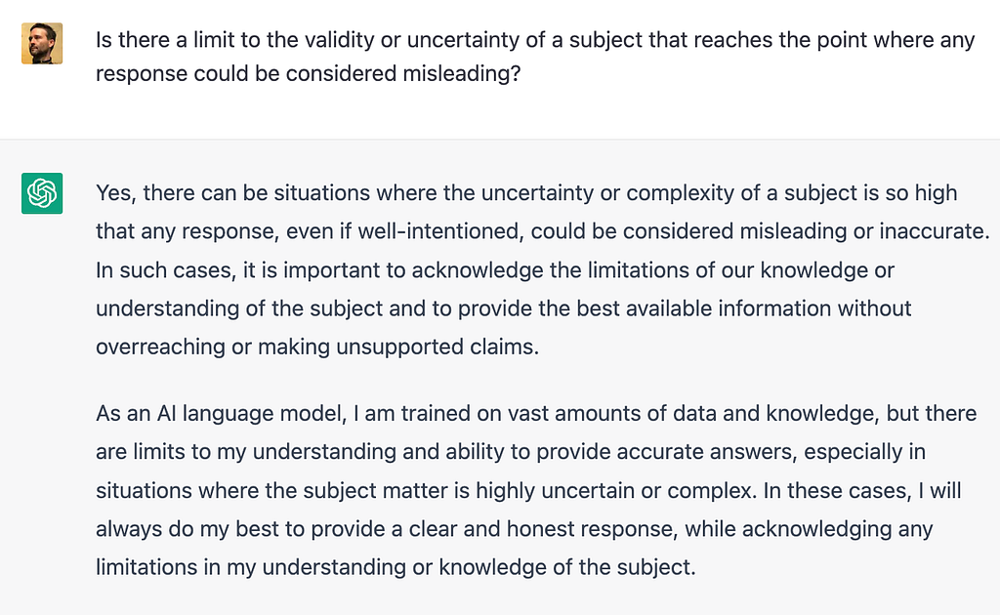
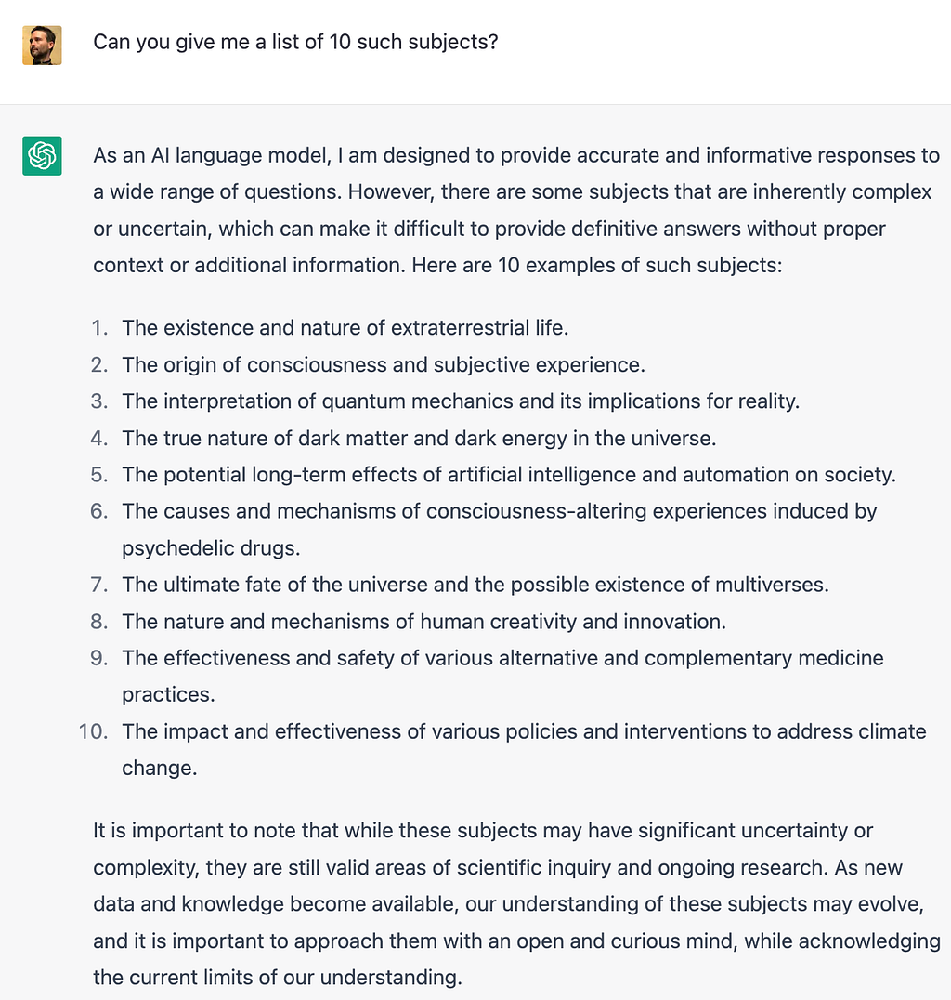
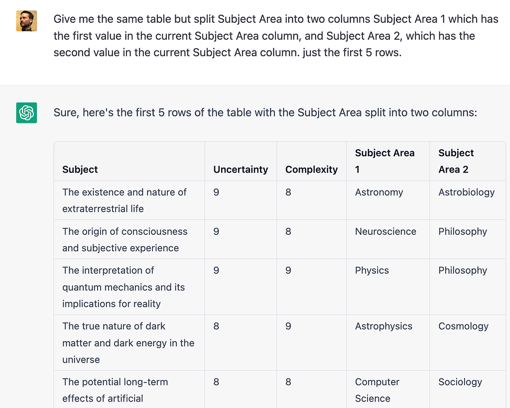
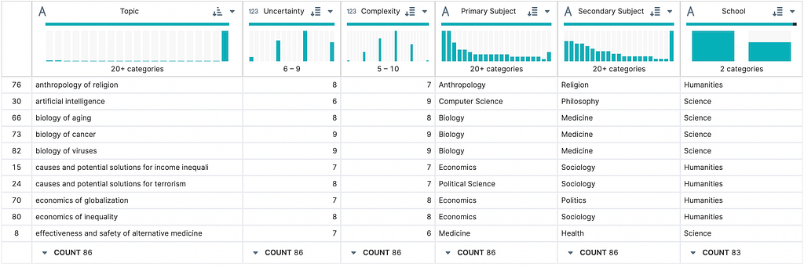
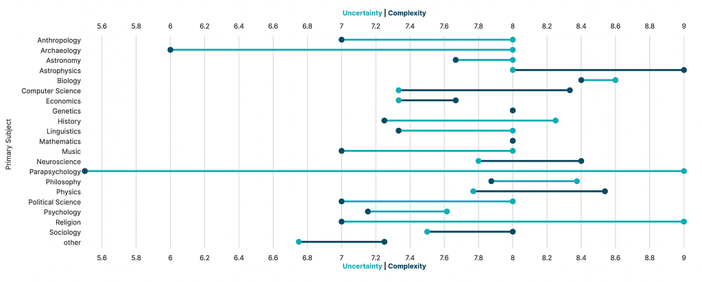
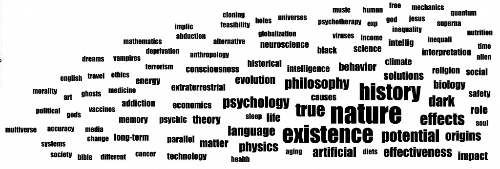
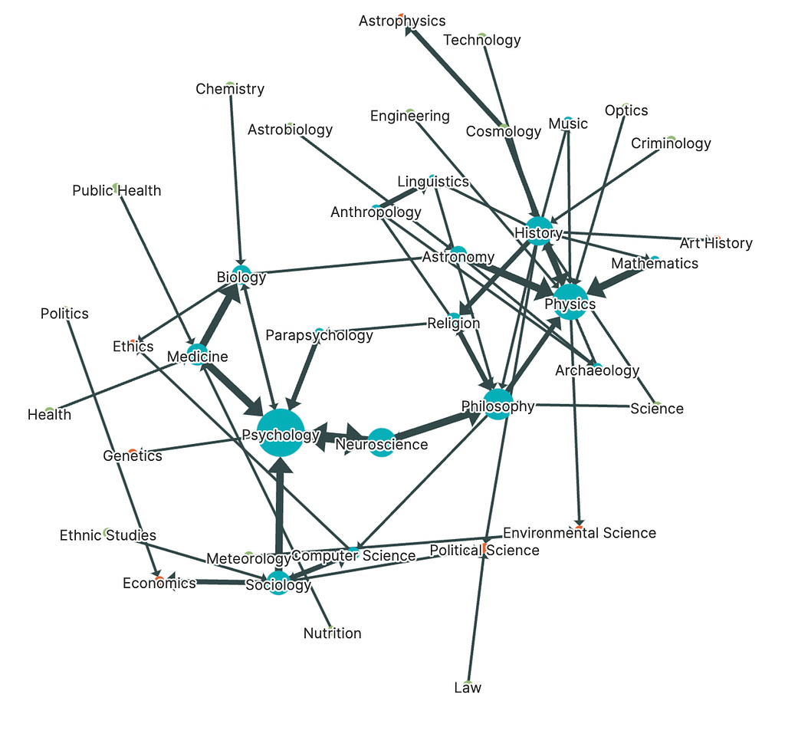
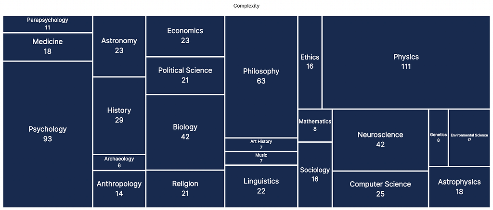
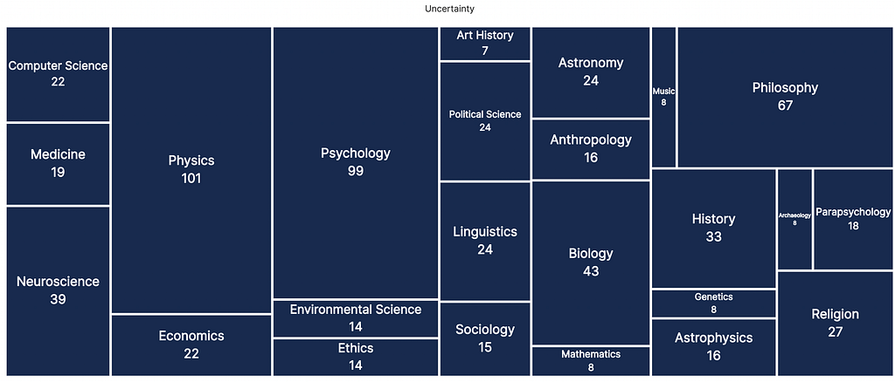

Like all of you, I’ve been intrigued by OpenAI’s ChatGPT. I’ve asked it questions about lime trees and ethics and DBT and come away impressed and, let’s be honest, more than a little scared. But more than anything else, I’ve chatted with ChatGPT about how it works. It’s told me how it uses what it calls Templates and Patterns to mad libs its responses (and how it doesn’t use them when it can’t and tries to figure out when they don’t work). And it’s responded effectively, though tepidly, about ethical concerns in its design and implementation (mostly variations of “trust me, smart people are thinking about this”).
As an aside, if you want to jump into the data you see below and work on developing your own exploration, there’s an interactive notebook version of this same essay with all the data analysis and visualization functionality you’ll need.
At one point, it mentioned it wouldn’t mislead or deceive and I asked it if it could do so just to be humorous. It insisted it would not. Then I asked if it was possible that a subject might be misleading in its very nature — something so uncertain that to give any kind of answer was to mislead the reader because anything like an answer to the question they were posing was not possible. That’s when I received a very intriguing reply.

A very thoughtful and correct answer. What kinds of subjects could these be?

Remember, ChatGPT rated these concepts according to two metrics: uncertainty and complexity. So, naturally, why not ask it for a dataset to plot those metrics? It took a little wrangling — very unlike the data wrangling I was used to — but finally I had it.

The result was 100 topics that ChatGPT thought were uncertain and complex enough that its answers could be misleading, rated by complexity and uncertainty and decorated with a primary and secondary subject area.
Here they are plotted from various views. DEX, the tool below, is fully interactive without a kernel so you can explore the data on your own if you’d like.
You’ll notice there are only 86 rows — that’s because ChatGPT came back with quite a few duplicate topics. Click on the table on the left navigation to explore individual topics.

I used DEX to produce a number of charts. If you check out the notebook, you can interact with them and create your own.





CONCLUSIONS
I asked ChatGPT what it thought about the dataset but found the results to be rather superficial. A few things stood out to me, though:
- Art is almost non-existent, except for the very generic “history of art” topic. Perhaps this represents cameraderie between ChatGPT and the various art generation tools like Midjourney.
- Phsychology and Phsyics are clearly the major subject areas for topics that are complex and uncertain, though with the clear distinction that for physics, the topics are more complex than uncertain, whereas in psychology it’s the reverse. Regardless, Physics topics are more complex and more uncertain on average than Psychology topics.
- Humanities topics are consistently more uncertain than they are complex and generally considered less complex than science topics.
A note: There’s a further exploration into data hallucination on the notebook that I’ve left out here, but if you want to see how ChatGPT can hallucinate and degrade the data it’s asked for, you should check it out!
You Might Be Uncertain About ChatGPT but Have You Ever Wondered What ChatGPT is Uncertain About? was originally published in Noteable on Medium, where people are continuing the conversation by highlighting and responding to this story.